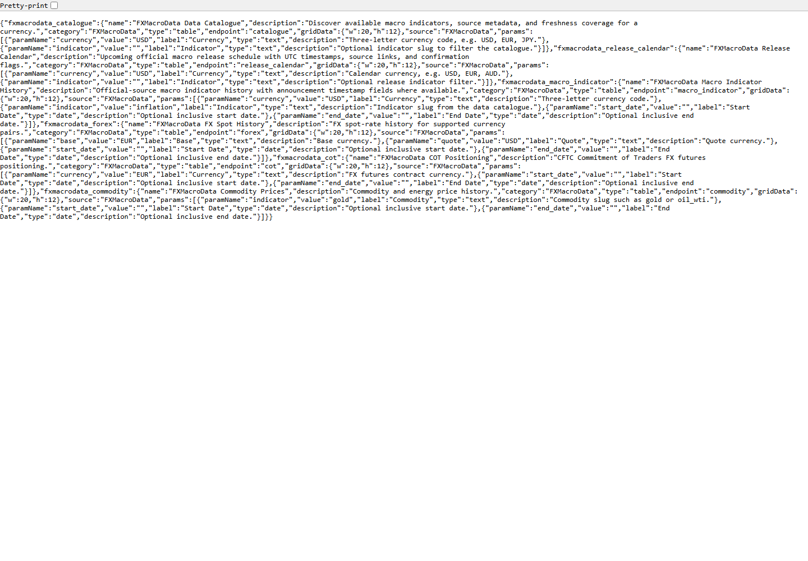
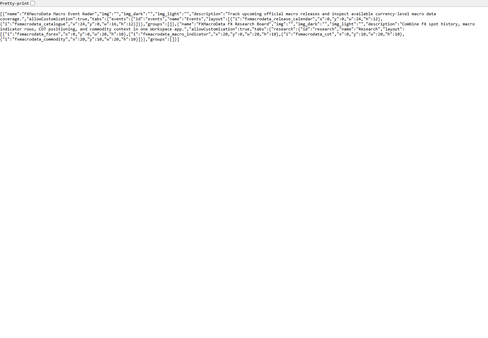
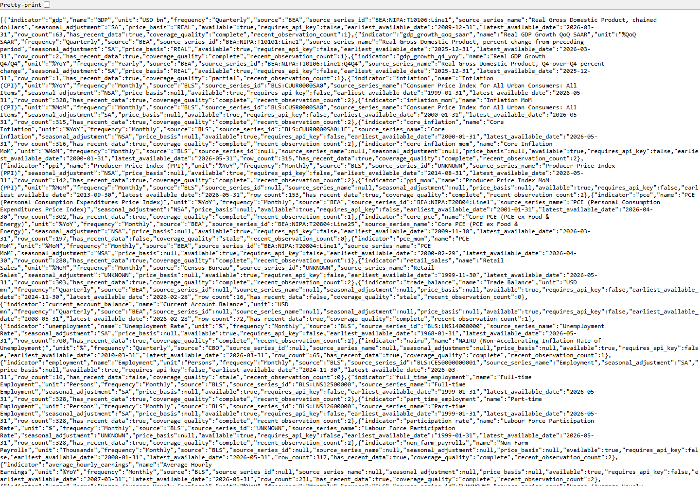
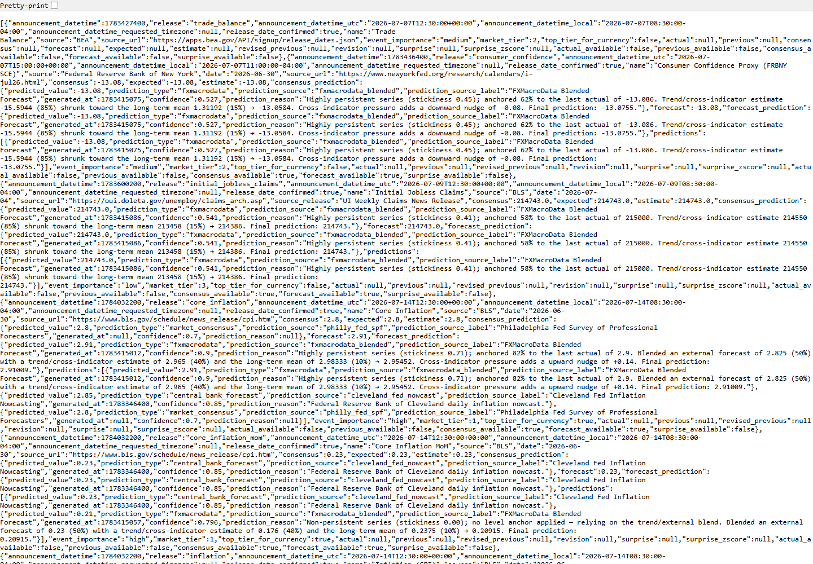

Date: 2026-07-07
Repository: C:\Users\rober\dev\fxmacrodata\fxmacrodata
Release candidate: fxmacrodata 1.2.0
No PyPI publish, GitHub release, tag, or OpenBB submission was performed.
| Area | Result | Evidence |
|---|---|---|
| Local SDK test suite | Pass | 27 passed, 1 skipped in 9.19s |
| Clean dev environment test suite | Pass | 33 passed, 3 warnings in 9.45s after python -m pip install -e ".[dev]" |
| Lint | Pass | python -m ruff check fxmacrodata tests |
| Formatting | Pass | python -m black --check fxmacrodata tests |
| Type check | Pass | python -m mypy fxmacrodata |
| Python compile check | Pass | python -m compileall fxmacrodata |
| Package build | Pass | Built wheel and sdist for 1.2.0 |
| Package metadata | Pass | twine check dist\* passed |
| PR validation workflow | Pass | Added validation-only GitHub Actions workflow for PRs and codex/** pushes; no publish/release steps |
| OpenBB entry-point smoke | Pass | Clean environment verified core/provider entry points, provider registration, Workspace widgets, and apps |
| Fresh wheel install, Workspace extra | Pass | Backend functions loaded from installed wheel |
| Fresh wheel install, OpenBB extra | Pass | Provider, router, and entry points loaded from installed wheel |
| OpenBB build | Pass | openbb-build discovered fxmacrodata@1.2.0 |
| OpenBB Python command, public data | Pass | USD catalogue returned shape (46, 17) and includes inflation |
| OpenBB Python commands, protected data | Pass | AUD GDP, EUR/USD FX, EUR COT, and gold commodity returned rows |
| Workspace backend endpoints | Pass | OpenBB Platform API launcher served /health, /widgets.json, /apps.json, and /catalogue?currency=USD as 200 OK; /docs and /openapi.json returned 404 by default |
| Issue | Fix |
|---|---|
SDK tests still assumed FX spot history was free, but live API returns 401 api_key_required. | Updated sync and async clients so get_fx_price requires and sends X-API-Key; updated README and tests. |
Build produced another 1.1.0 package. | Bumped release candidate metadata to 1.2.0. |
| Setuptools warned about deprecated TOML table license syntax. | Changed license metadata to license = "MIT". |
The previous httpx2>=0.28 dev dependency was invalid for the current httpx2 package line. | Corrected it to httpx2>=2.0 and kept httpx>=0.24 for OpenBB/test tooling compatibility. |
| Async helper tests depended on a globally installed pytest plugin. | Added pytest-asyncio>=0.23 to dev requirements and validated in a clean environment. |
| Protected live tests could fail noisily in CI when no API key was configured. | Centralized the API-key skip in the keyed-client fixture and added mocked auth tests for deterministic coverage. |
The optional OpenBB provider fallback failed mypy when openbb_core was absent. | Reworked the provider import fallback to avoid assigning None to the imported provider class symbol. |
The repo had no safe PR validation workflow; existing CI/CD only runs on main/dev and includes release/publish steps. | Added .github/workflows/pr-validation.yml with read-only validation on PRs and codex/** pushes. |
| The Workspace backend exposed FastAPI Swagger/OpenAPI docs by default. | Disabled /docs, /redoc, and /openapi.json unless FXMACRODATA_OPENBB_ENABLE_DOCS=1 is set for local debugging. |
| The Workspace backend had not been checked through OpenBB's own API launcher. | Added dev dependency openbb-platform-api>=1.3.6, a launcher import test, and a local openbb-api --app fxmacrodata/openbb/workspace_backend.py --name app smoke run. |
Current openbb-core rejected router command signatures because postponed annotations hid actual parameter types. | Removed postponed annotations from fxmacrodata.openbb.router. |




pro.openbb.co; current screenshots validate the custom backend endpoints, not the hosted OpenBB UI.fxmacrodata 1.2.0.